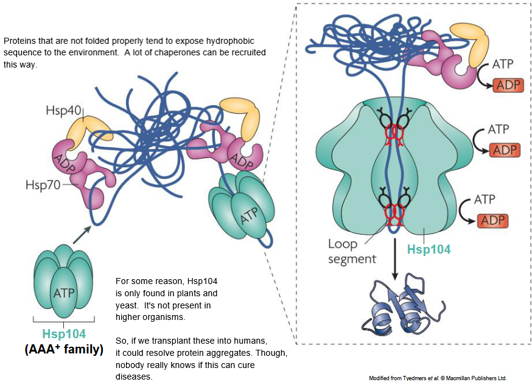
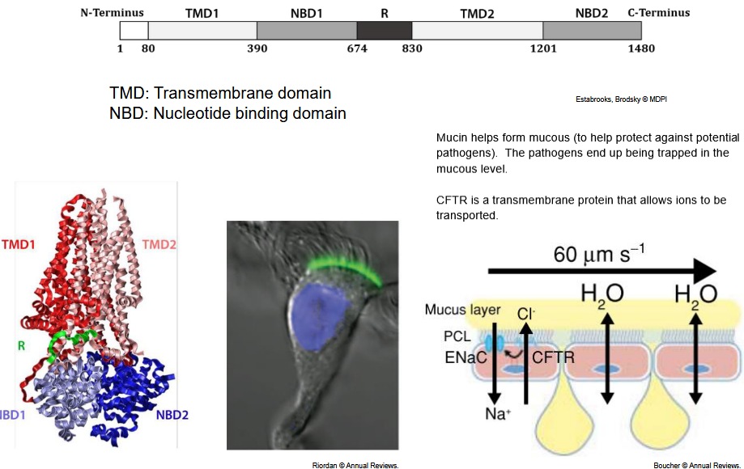
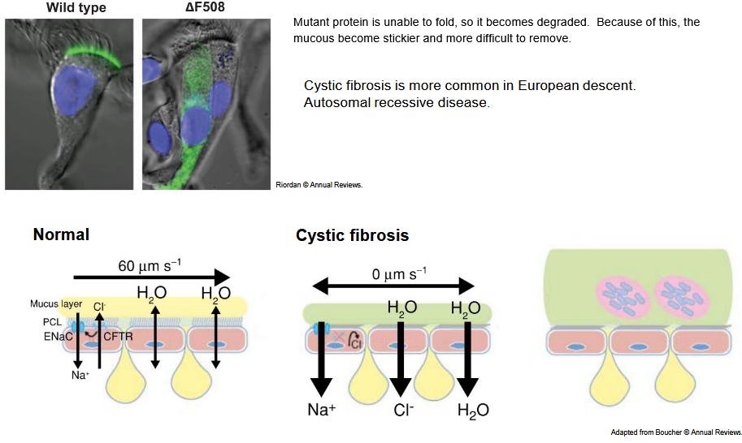
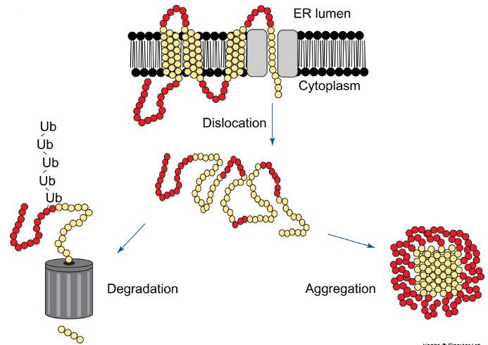
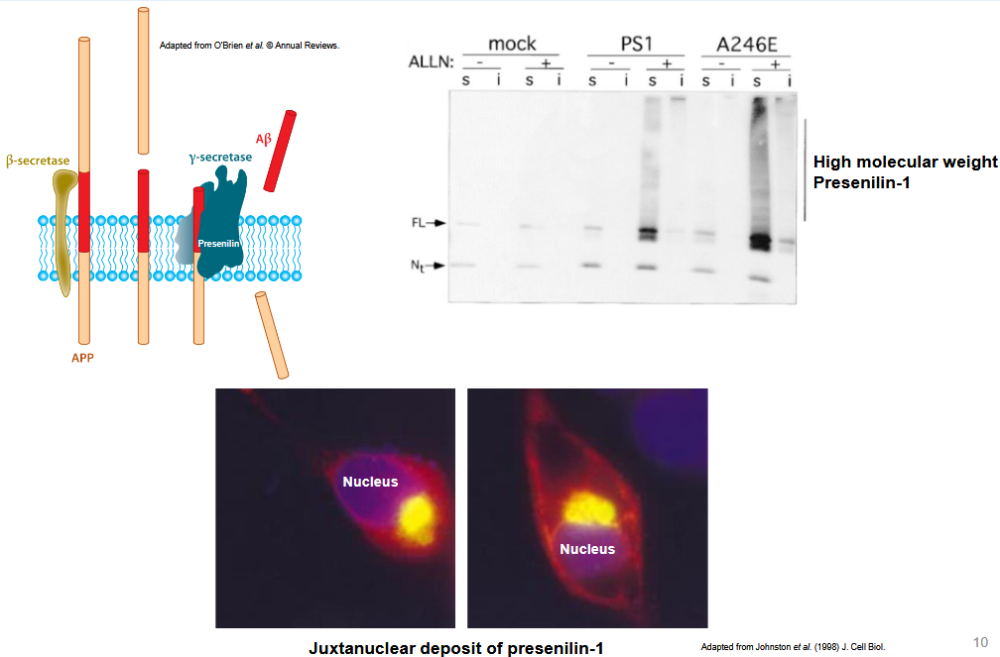
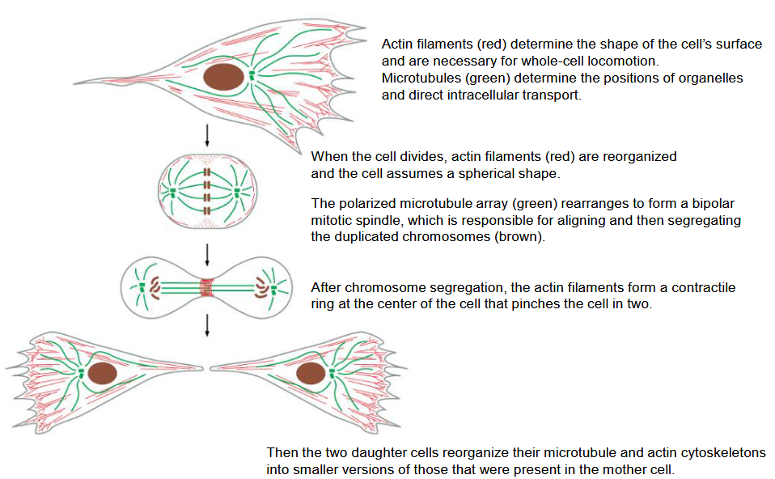

8 Mechanism of Intracellular Protein Deposition
Protein disaggregation is a critical cellular process that helps maintain protein homeostasis by resolving protein aggregates and misfolded proteins. One key player in this process is the heat shock protein 104 (Hsp104), a molecular chaperone found in certain organisms such as yeast.
Hsp104 functions as a disaggregase, meaning it is capable of dissociating and solubilizing protein aggregates, thereby restoring proteins to their functional, native state. Here’s how Hsp104 accomplishes this task:
Recognition of Protein Aggregates: Hsp104 recognizes and binds to protein aggregates and misfolded proteins that have become trapped in non-functional conformations. These aggregates may form in response to cellular stress, such as heat shock or exposure to denaturing agents.
ATP-Dependent Unfolding: Hsp104 utilizes energy from ATP hydrolysis to drive the unfolding of proteins within aggregates. This process involves the threading of individual polypeptide chains through the central pore of the Hsp104 hexamer, where they can be unfolded and separated from the aggregate.
Disaggregation and Solubilization: Once unfolded, the individual polypeptide chains are released from the aggregate and refolded into their native, functional conformations. Hsp104 may also cooperate with other chaperones and co-chaperones to facilitate the refolding process and ensure proper protein folding.
Reactivation of Functional Proteins: By disaggregating protein aggregates and refolding misfolded proteins, Hsp104 helps restore proteins to their native, functional states. This allows the cell to maintain protein homeostasis and prevent the accumulation of toxic protein aggregates that can interfere with cellular processes.
8.1 Cystic Fibrosis

Cystic fibrosis (CF) is a genetic disorder characterized by the buildup of thick, sticky mucus in the lungs, digestive system, and other organs. It is caused by mutations in the cystic fibrosis transmembrane conductance regulator (CFTR) gene, which encodes a protein that regulates the flow of salt and fluids in and out of cells.
The CFTR protein is a chloride channel found primarily in the epithelial cells lining the respiratory, digestive, and reproductive tracts. It plays a crucial role in maintaining the balance of salt and water across cell membranes, which is essential for normal fluid secretion and mucus clearance in various organs.
Mutations in the CFTR gene can lead to dysfunction or absence of the CFTR protein, resulting in impaired chloride transport and dysregulated fluid secretion. This leads to the buildup of thick, sticky mucus in the airways, pancreas, liver, intestines, and other organs, leading to a range of symptoms and complications characteristic of cystic fibrosis.
Some common symptoms of cystic fibrosis include:
- Persistent coughing with thick mucus
- Frequent lung infections, such as pneumonia and bronchitis
- Difficulty breathing and shortness of breath
- Poor growth and weight gain despite a good appetite
- Salty-tasting skin
- Digestive problems, including pancreatic insufficiency and intestinal blockages
- Male infertility due to congenital absence of the vas deferens
Treatment for cystic fibrosis aims to manage symptoms, prevent complications, and improve quality of life. This may include medications to help thin mucus, antibiotics to treat infections, airway clearance techniques, nutritional support, and, in some cases, lung transplantation. Emerging therapies, such as CFTR modulators, target specific defects in the CFTR protein and aim to correct or improve chloride transport function, offering promising new treatment options for individuals with cystic fibrosis.
8.1.1 Mucous Production in Cystic Fibrosis

The CFTR gene encodes the cystic fibrosis transmembrane conductance regulator protein, which plays a crucial role in regulating the flow of salt and fluids across cell membranes. Mutations in the CFTR gene result in dysfunctional or absent CFTR protein, leading to impaired chloride transport and dysregulated fluid secretion in various organs.
One of the hallmark features of cystic fibrosis is the buildup of thick, sticky mucus in the airways, digestive tract, and other organs. This mucus accumulation impairs mucociliary clearance, which is a key defense mechanism of the lungs. Mucociliary clearance involves the coordinated movement of mucus and its contents, including potentially harmful substances like bacteria and debris, out of the lungs via ciliary action.
In individuals with cystic fibrosis, the impaired clearance of mucus from the airways leads to the retention of mucus, along with trapped bacteria and other pathogens. This creates an environment conducive to recurrent lung infections, inflammation, and progressive damage to lung tissue, ultimately resulting in respiratory symptoms such as persistent coughing, difficulty breathing, and recurrent lung infections.
8.1.2 CFTR Aggregation

In cystic fibrosis (CF), the cystic fibrosis transmembrane conductance regulator (CFTR) protein undergoes both degradation and aggregation, contributing to the pathophysiology of the disease.
Degradation of CFTR: CFTR protein degradation occurs when mutated CFTR proteins are recognized as misfolded or defective by the cellular quality control machinery. This recognition typically leads to the targeting of mutant CFTR proteins for degradation through the cellular degradation pathways, such as the ubiquitin-proteasome system or the lysosomal degradation pathway.
Ubiquitin-Proteasome System (UPS): Misfolded or defective CFTR proteins may be tagged with ubiquitin molecules, marking them for degradation by the proteasome, a cellular complex responsible for degrading unwanted or damaged proteins. Defective CFTR proteins that fail to pass quality control are ubiquitinated and targeted for degradation by the proteasome.
Lysosomal Degradation Pathway: Alternatively, misfolded CFTR proteins may be trafficked to lysosomes, where they are degraded by lysosomal enzymes. Lysosomes are cellular organelles containing enzymes capable of breaking down proteins, lipids, and other macromolecules. CFTR proteins that are misfolded or fail to properly fold may be targeted to lysosomes for degradation.
Aggregation of CFTR: In addition to degradation, misfolded or defective CFTR proteins may also form aggregates or clumps within cells. Aggregation occurs when mutated CFTR proteins, unable to fold properly, accumulate and interact with each other, leading to the formation of insoluble protein aggregates.
Impact on Cellular Function: The aggregation of CFTR proteins can disrupt cellular processes and impair cellular function. Aggregated CFTR proteins may interfere with intracellular trafficking pathways, impair protein folding and assembly, and disrupt normal cellular signaling processes. Additionally, protein aggregates can trigger cellular stress responses and contribute to cellular toxicity.
Contribution to Disease Pathology: The accumulation of misfolded CFTR proteins and protein aggregates is thought to contribute to the pathogenesis of cystic fibrosis by impairing CFTR function, disrupting cellular homeostasis, and promoting cellular dysfunction and tissue damage. The presence of protein aggregates may also exacerbate inflammation and oxidative stress, further contributing to disease progression.
8.1.2.1 APP

Another membrane protein known to form aggresomes is the amyloid precursor protein (APP). APP is a type I transmembrane protein that plays a role in synaptic function and has been implicated in the pathogenesis of Alzheimer’s disease (AD) when processed aberrantly.
Amyloid Precursor Protein (APP): APP is primarily known for its involvement in the pathogenesis of Alzheimer’s disease, where abnormal processing of APP leads to the production and accumulation of amyloid-beta (Aβ) peptides. However, under certain conditions, misfolded or aggregated forms of APP can accumulate in cells and contribute to the formation of aggresomes.
Aggresome Formation: Similar to CFTRΔF508, misfolded or aggregated forms of APP can overwhelm the cellular quality control machinery, leading to the formation of aggresomes. Aggresomes serve as sites for sequestering and concentrating misfolded proteins, preventing their toxic effects and facilitating their subsequent degradation.
Consequences for Cellular Function: The accumulation of misfolded APP in aggresomes can disrupt cellular homeostasis and impair cellular function. Aggresome formation may interfere with normal cellular processes, such as protein trafficking, organelle dynamics, and cellular signaling pathways. Additionally, the sequestration of misfolded APP in aggresomes may prevent its proper localization and function at the cell membrane, where it is involved in synaptic transmission and neuronal signaling.
Pathological Implications: In the context of Alzheimer’s disease, the aggregation of APP and the accumulation of Aβ peptides are key pathological features associated with the formation of amyloid plaques in the brain. Aggresome formation may represent a cellular response to the accumulation of misfolded APP and Aβ peptides, serving as a protective mechanism to mitigate their toxic effects.
Therapeutic Considerations: Understanding the mechanisms underlying APP aggregation and aggresome formation is important for developing therapeutic strategies to alleviate protein misfolding and aggregation in Alzheimer’s disease and related neurodegenerative disorders. Approaches aimed at promoting proper protein folding, enhancing protein degradation pathways, or disaggregating protein aggregates may hold promise for treating Alzheimer’s disease and mitigating its progression.
8.2 Cytoskeleton Organization During Cell Division

During cell division, the cytoskeletal organization undergoes dynamic changes to facilitate various processes such as chromosome segregation and cytokinesis.
Actin Filaments Reorganization: Actin filaments, which determine the shape of the cell’s surface and are involved in cellular locomotion, undergo reorganization during cell division. Initially, actin filaments are reorganized, and the cell assumes a spherical shape. Subsequently, after chromosome segregation, actin filaments form a contractile ring at the center of the cell, which pinches the cell in two during cytokinesis.
Microtubule Rearrangement: The polarized microtubule array undergoes rearrangement to form a bipolar mitotic spindle. This mitotic spindle is responsible for aligning and segregating duplicated chromosomes during cell division. Microtubules determine the positions of organelles and facilitate intracellular transport.
Daughter Cell Cytoskeletal Reorganization: After cell division is complete, the two daughter cells reorganize their microtubule and actin cytoskeletons into smaller versions of those present in the mother cell. This reorganization ensures that each daughter cell has the necessary cytoskeletal components for cellular functions such as maintaining cell shape, facilitating intracellular transport, and supporting cellular movement.
8.2.1 Microtubules and Centromeres
The centrosome and microtubules play essential roles in organizing the cell’s cytoskeleton and facilitating various cellular processes.
Centrosome: The centrosome is a cellular organelle that serves as the main microtubule-organizing center (MTOC) in animal cells. It consists of a pair of centrioles surrounded by pericentriolar material (PCM). The centrosome is involved in nucleating, anchoring, and organizing microtubules within the cell.
Microtubules: Microtubules are dynamic protein filaments composed of tubulin subunits. They extend outward from the centrosome throughout the cell, forming a network of tracks along which molecular motors and vesicles can move. Microtubules have a polarity, with one end referred to as the “plus end” and the other end as the “minus end.”
Organization of Microtubules: Within the cell, the centrosome serves as the primary site for microtubule nucleation. Microtubules extend outward from the centrosome, with their plus ends pointing toward the cell periphery. This radial array of microtubules provides structural support to the cell and facilitates intracellular transport, cell division, and cell motility.
Cellular Functions: Microtubules are involved in various cellular processes, including:
- Intracellular transport: Microtubules serve as tracks for molecular motors such as dynein and kinesin, facilitating the movement of organelles, vesicles, and proteins within the cell.
- Cell division: Microtubules form the mitotic spindle during cell division, facilitating the alignment and segregation of chromosomes.
- Cell shape and motility: Microtubules contribute to cell shape maintenance and are involved in processes such as cell migration and ciliary/flagellar movement.
8.2.2 Mitotic Spindle
The mitotic spindle is a dynamic structure composed of microtubules that forms during cell division (mitosis) and is essential for the accurate segregation of chromosomes into daughter cells. Microtubules are long, cylindrical polymers made up of tubulin protein subunits arranged in a helical fashion. Each tubulin subunit consists of an α-tubulin and a β-tubulin molecule, which assemble end-to-end to form the microtubule filament.
The structure of a microtubule can be described as follows:
Polarity: Microtubules exhibit polarity, with one end referred to as the “plus end” and the other end as the “minus end.” The plus end is characterized by the addition of tubulin subunits, while the minus end is associated with the removal of subunits.
Growth and Shrinking: Microtubules undergo dynamic instability, a process in which they alternate between periods of growth (polymerization) and shrinking (depolymerization). During polymerization, tubulin subunits are added to the growing plus end of the microtubule, while during depolymerization, subunits are removed from the plus end.
Structural Features: Microtubules have a hollow cylindrical structure, with an outer diameter of approximately 25 nanometers. The tubulin subunits assemble longitudinally along the microtubule axis, forming a protofilament. Thirteen protofilaments are arranged in parallel to form the wall of the microtubule.
Dynamic Instability: The dynamic instability of microtubules allows them to explore space within the cell and rapidly reorganize their structure. This property is crucial for the formation and function of the mitotic spindle during cell division.